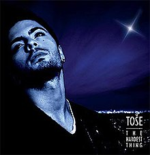

-
1999. - НЕКАДЕ ВО НОЌТА
-
2000. - СИНОТ БОЖЈИ
- 2000. - Помози ми(дует са Каролином Гочевом)
- 2000. - Немир(дует са Каролином Гочевом - македонска верзија песме Помози ми, single)
- 2001. - 1200 миља(дует са Гоцом Тржан, single)
- 2001. - 1200 милји(дует са Гоцом Тржан, македонска верзија, single)
- 2002. - Кад волиш (постхумно објављена 2017. године, оригинално намењена Тошету, познатија у извођењу Каролине Гочеве)
-
2002. - АКО МЕ ПОГЛЕДАШ У ОЧИ (Ако ме погледнеш во очи)
- Ако ме погледаш у очи
Ако ме погледнеш во очи (македонска верзија) - Соба за тугу
Соба за тага (македонска верзија) - Чини (дует са Есмом Реџеповом)
Магија (македонска верзија) - Hold me tight
- Још један степеник
Уште една скала (македонска верзија) - На место злочина
Место на злосторот (македонска верзија) - Лименка
Лименка (македонска верзија) - Ледена
Студена (македонска верзија) - Мени хвала ниједно
Немаш ни благодарам (македонска верзија) - Луда мала
- Ако ме погледаш у очи
-
2004. - ДАН ЗА НАС (Ден за нас)
- Звездо Севернице
Звезда Севернице (македонска верзија) - Кад вараш ти
Ме сакаш со зборови (македонска верзија) - Жена Балканска
Жена Балканска (македонска верзија) - Има ли дан за нас
Има ли ден за нас - Кажем лејди
Велем лејди (македонска верзија) - Никада
- Парче од Европа
- Чија си
- Life
Ангел си ти (македонска верзија) - Погледај у мене
Далеку од мене (македонска верзија) - Сан егзотичан
Сон егзотичен - Опрости
Љубена (македонска верзија) - Једина
Громови на душа (македонска верзија) - Што си отишла
Зошто отиде - Хеј плавоока, хеј босонога
Еј синоока, еј босонога (македонска верзија) - Кад срце плати стари дуг
Го лажам секој нов рефрен (македонска верзија)
- Звездо Севернице
-
2005. - ПРАТИМ ТЕ (По тебе)
- Пратим те
По тебе (македонска верзија) - Жао ми је
- Ране на уснама
Рани на усните (македонска верзија) - Чујеш ли
Слушаш ли (македонска верзија) - Мала
Малечка - Лоше ти стоји
Лошо ти стои (македонска верзија) - Ко ти то гризе образе
Кој ли ти гризе образи (македонска верзија) - Пољско цвеће
Полско цвеќе (македонска верзија) - Нај, нај
Нај нај (македонска верзија) - За овој свет
This World - Лагала нас мала (дует са Тонијем Цетинским)
- Крајње вријеме (дует са Ањом Рупел)
- Пратим те

-
2006. - БОЖИЛАК
-
2007. - ИГРА БЕЗ ГРАНИЦА (Игри без граници)
- Пола душе, пола срца
Душа остана (македонска верзија) - Убијаш ме уснама
Никој како тебе не бакнува (македонска верзија) - Боже брани је од зла
Боже чувај ја од зло (македонска верзија) - Мјецечина
Месечина (македонска верзија) - Игра без граница
Игри без граници (македонска верзија) - Да л'си сретнија
Среќна ли си ти (македонска верзија)
Моја (словеначка верзија) - Најлепше моје
Најдрага моја (македонска верзија) - Срећо не криви ме
Јас не сум виновен (македонска верзија) - Још и данас замирише трешња
Цреша (македонска верзија) - Волим осмијех твој (дует са Антонијом Шолом)
- Вежи ме за себе
- Остала си увијек иста (обрада)
- Срце није камен
- Несаница (адаптација из филма Ивкова свадба)
- Feeling Good (обрада)
- Пола душе, пола срца
Постхумни албум
-
25. 1. 2009. - THE HARDEST THING